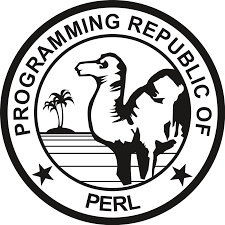

Skills



I intend to obtain an exposure and experience in an organization that could provide me with
challenging tasks wherein
I can utilize my knowledge, skills and team work capabilities to the fullest
extent in favor of the organization's interest.